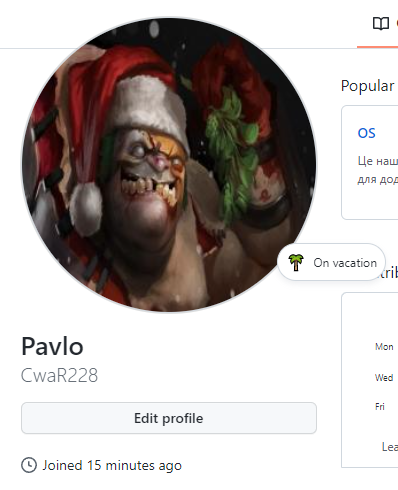
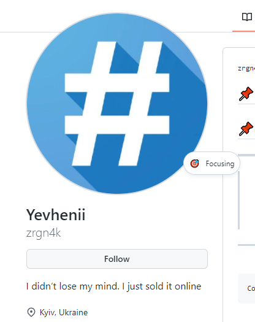
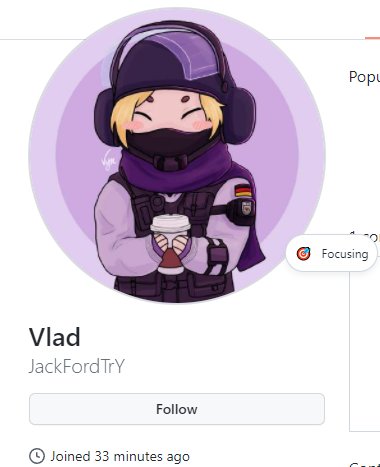

1)

Git is software for tracking changes in any set of files, usually used for coordinating work among programmers collaboratively developing source code during software development. Its goals include speed, data integrity, and support for distributed, non-linear workflows (thousands of parallel branches running on different systems). Git was created by Linus Torvalds in 2005 for development of the Linux kernel, with other kernel developers contributing to its initial development. Since 2005, Junio Hamano has been the core maintainer. As with most other distributed version control systems, and unlike most client–server systems, every Git directory on every computer is a full-fledged repository with complete history and full version-tracking abilities, independent of network access or a central server.
These are common Git commands used in various situations:
start a working area
clone Clone a repository into a new directory
init Create an empty Git repository or reinitialize an existing one
work on the current change
add - Add file contents to the index
mv - Move or rename a file, a directory, or a symlink
restore - Restore working tree files
rm - Remove files from the working tree and from the index
examine the history and state
bisect - Use binary search to find the commit that introduced a bug
diff - Show changes between commits, commit and working tree, etc
grep - Print lines matching a pattern
log - Show commit logs
show - Show various types of objects
status - Show the working tree status
grow, mark and tweak your common history
branch - List, create, or delete branches
commit - Record changes to the repository
merge - Join two or more development histories together
rebase - Reapply commits on top of another base tip
reset - Reset current HEAD to the specified state
switch - Switch branches
tag - Create, list, delete or verify a tag object signed with GPG
collaborate
fetch - Download objects and refs from another repository
pull - Fetch from and integrate with another repository or a local branch
push - Update remote refs along with associated objects
2)


